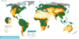

desertification

Definition: Desertification is a type of gradual land degradation of fertile land into arid desert due to a combination of natural processes and human activities. This spread of arid areas is caused by a variety of factors, such as overexploitation of soil as a result of human activity and the effects of climate change. Geographic areas most affected are located in Africa (Sahel region), Asia (Gobi Desert and Mongolia) and parts of South America. Drylands occupy approximately 40–41% of Earth's land area and are home to more than 2 billion people. Effects of desertification include sand and dust storms, food insecurity, and poverty.
Source: Wikipedia
Wikipedia Page (Something wrong with this association? Let us know.)
Wikidata Page (Something wrong with this association? Let us know.)